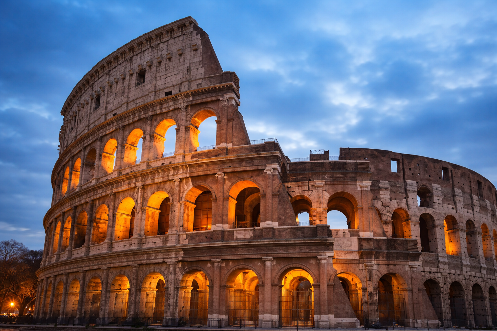
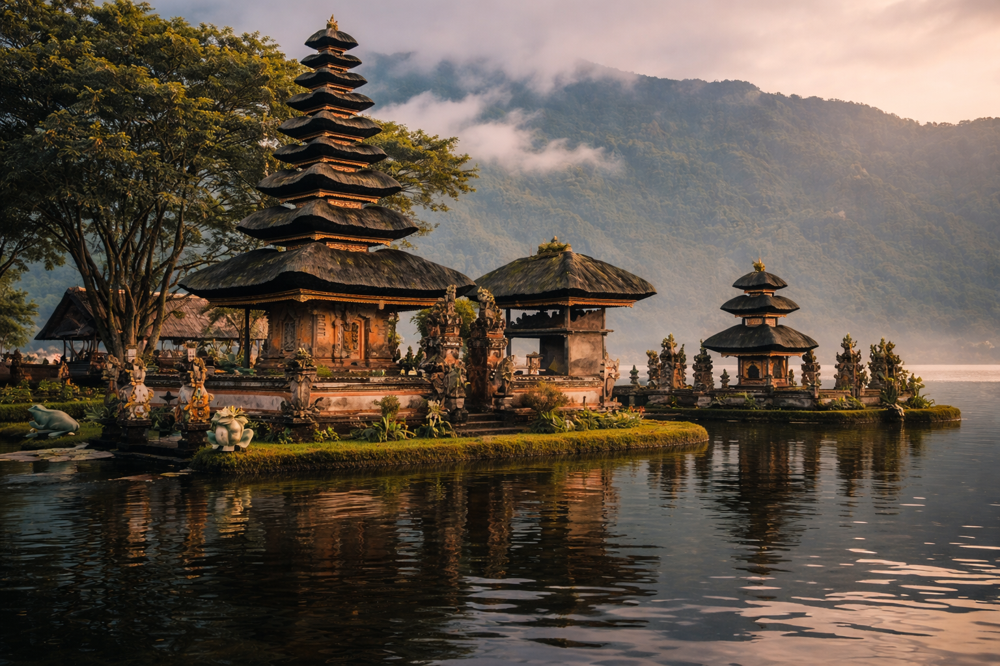
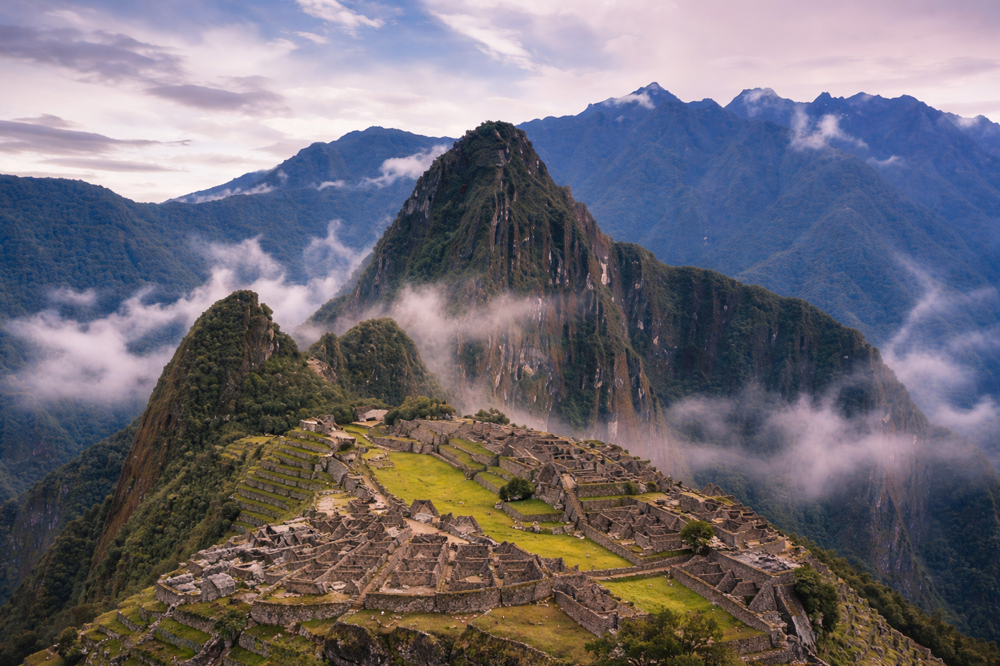
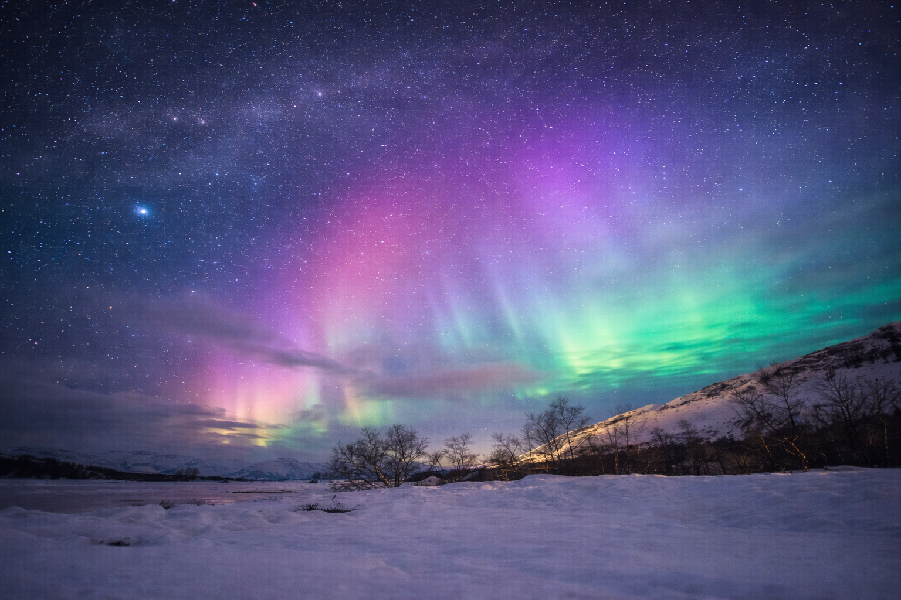
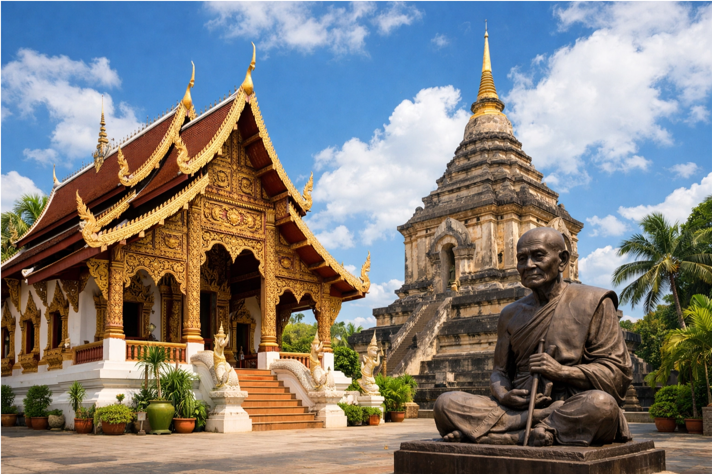
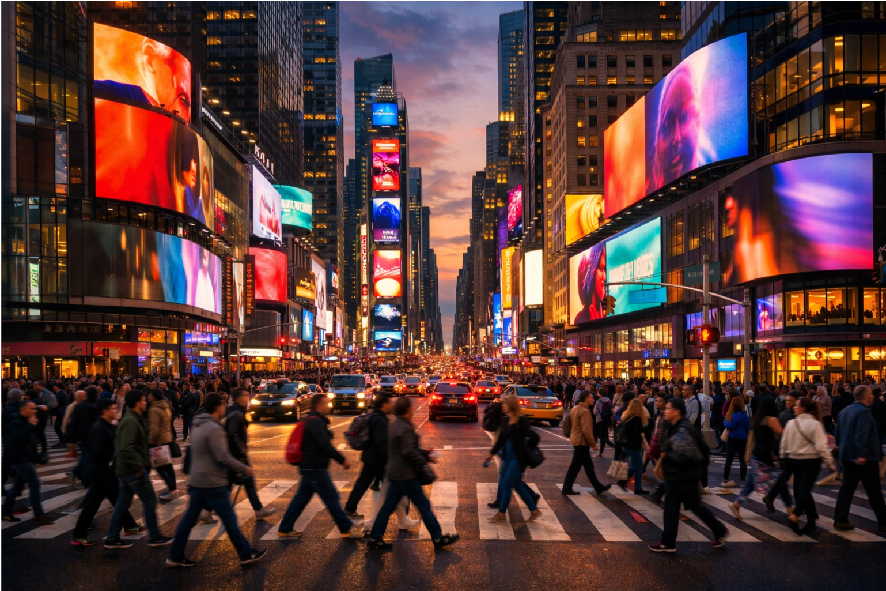

探索世界
千年古都的四季之美。古老的寺廟、精緻的茶道文化，以及四季變換的自然美景，京都是日本傳統文化的精髓所在。
愛琴海上的藍白夢境。愛琴海上的藍白小島，壯麗的火山地貌與迷人的日落景色，是最浪漫的地中海度假勝地。
野生動物的最後伊甸園。世界最著名的野生動物保護區，每年壯觀的角馬大遷徙，是每位探險者必訪的非洲聖地。

永恆之城，古羅馬競技場、梵蒂岡、許願池，每一個角落都承載著千年的歷史與文明。

神明之島，梯田稻田、印度教廟宇與碧藍海灘的完美結合，是身心靈療癒的天堂。

雲端上的印加古城，隱藏在安第斯山脈深處的神秘遺址，是人類文明最偉大的奇蹟之一。

極光、冰川、火山、瀑布，冰島是地球上最超現實的自然奇觀集合地，攝影師的天堂。

北泰古都，300座寺廟、傳統工藝市集與大象保護區，是深度體驗泰國文化的最佳選擇。

世界的十字路口，時代廣場的霓虹燈光、中央公園的寧靜綠意，紐約永遠不缺少驚喜。